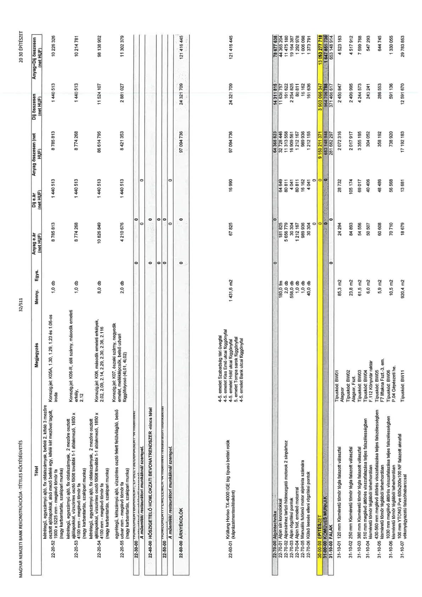

| Tétel | Megjegyzés | Menny. | Egys. | Anyag e.ár (net HUF) | Díj e.ár (net HUF) | Anyag összesen (net HUF) | Díj összesen (net HUF) | Anyag+Díj összesen (net HUF) |
|---|---|---|---|---|---|---|---|---|
| 22-20-52 | Konszig jel: K05A, 1.30, 1.29, 1.23 és 1.06-os iroda | 1,0 | db | 8 785 813 | 1 440 513 | 8 785 813 | 1 440 513 | 10 226 326 |
| 22-20-53 | Konszig jel: K06-R, déli szárny, második emeleti erkély, 2.12 | 1,0 | db | 8 774 268 | 1 440 513 | 8 774 268 | 1 440 513 | 10 214 781 |
| 22-20-54 | Konszig jel: K06, második emeleti erkélyek, 2.02, 2.09, 2.14, 2.29, 2.30, 2.36, 2.116 | 8,0 | db | 10 826 849 | 1 440 513 | 86 614 795 | 11 524 107 | 98 138 902 |
| 22-20-55 | Konszig jel: K07, északi szárny, negyedik emelet, melléklépcsők, belső udvari függőfolyosó (4L01, 4L02) | 2,0 | db | 4 210 676 | 1 440 513 | 8 421 353 | 2 881 027 | 11 302 379 |
| 22-60-00 ÁRNYÉKOLÓK | NaN | NaN | NaN | 0 | 0 | 0 | 0 | 0 |
| 22-60-01 | 4-5. emelet Szabadság téri üvegfal, 4-5. emelet Kiss Ernő utcai függönyfal, 4-5. emelet Hold utcai függönyfal, 5. emelet Tompa sarok függönyfal, 4-5. emelet Bank utcai függönyfal | 1 431,6 | m2 | 67 825 | 16 990 | 97 094 736 | 24 321 709 | 121 416 445 |
| 22-70-00 Alpintechnika | NaN | NaN | NaN | 0 | 0 | 0 | 0 | 0 |
| 22-70-01 | NaN | 180,0 | fm | 181 825 | 64 649 | 32 728 446 | 11 636 757 | 44 365 204 |
| 22-70-02 | NaN | 2,0 | db | 5 656 779 | 80 811 | 11 313 558 | 161 622 | 11 475 180 |
| 22-70-03 | NaN | 558,0 | db | 30 304 | 4 041 | 16 909 561 | 2 254 825 | 19 164 387 |
| 22-70-04 | NaN | 1,0 | db | 1 212 167 | 80 811 | 1 212 167 | 80 811 | 1 292 978 |
| 22-70-05 | NaN | 1,0 | db | 989 936 | 16 162 | 989 936 | 16 162 | 1 006 098 |
| 22-70-06 | NaN | 40,0 | db | 30 304 | 4 041 | 1 212 155 | 161 636 | 1 373 791 |
| 30-00-00 ÉPÍTÉSZET | NaN | NaN | NaN | 0 | 0 | 0 | 0 | 0 |
| 31-00-00 KŐMŰVES MUNKÁK | NaN | NaN | NaN | 0 | 0 | 0 | 0 | 0 |
| 31-10-00 FALAK | NaN | NaN | NaN | 0 | 0 | 0 | 0 | 0 |
| 31-10-01 | Típuskód: BW01, Átagsor | 85,3 | m2 | 24 294 | 28 732 | 2 072 316 | 2 450 847 | 4 523 163 |
| 31-10-02 | Típuskód: BW02, Alagsor, Fszt | 23,8 | m2 | 84 893 | 105 174 | 2 017 917 | 2 499 995 | 4 517 912 |
| 31-10-03 | Típuskód: BW03 | 61,5 | m2 | 54 556 | 69 017 | 3 355 195 | 4 244 573 | 7 599 768 |
| 31-10-04 | Típuskód: BW04, F.112 Könyvtár raktár | 6,0 | m2 | 50 507 | 40 406 | 303 052 | 242 241 | 545 293 |
| 31-10-05 | Típuskód: BW05, F7 liftakna Fszt.-3. em. | 5,9 | m2 | 60 608 | 48 486 | 358 192 | 286 553 | 644 745 |
| 31-10-06 | Típuskód: BW06, P.04 Gépészeti he. | 10,5 | m2 | 70 710 | 56 568 | 738 920 | 591 136 | 1 330 055 |
| 31-10-07 | Típuskód: BW11 | 920,4 | m2 | 18 679 | 13 681 | 17 192 183 | 12 591 670 | 29 783 853 |
